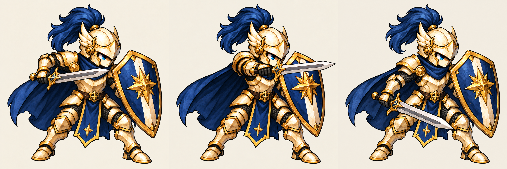

방패병 공격 · 3키포즈 시험 재생
준비 → 찌르기 → 대기 자세 복귀. 중간 프레임·투명화 전의 후보이며 게임 실행 화면이 아닙니다. 자동 재생하지 않습니다.
준비 · 180ms
검토 시간: 180 / 100 / 320ms, 총 600ms. 게임 공격속도 확정값이 아닙니다. 마지막 프레임은 기존 대기 원화 재사용이며 별도 회복 동작이 아닙니다.
정지 시트와 남은 문제

불투명 배경, 검 폭·어깨판·천 장식의 변화, 중간 프레임 부재를 교정해야 합니다. 발 위치는 육안상 유사하지만 픽셀 단위 고정 판정은 미완료입니다.